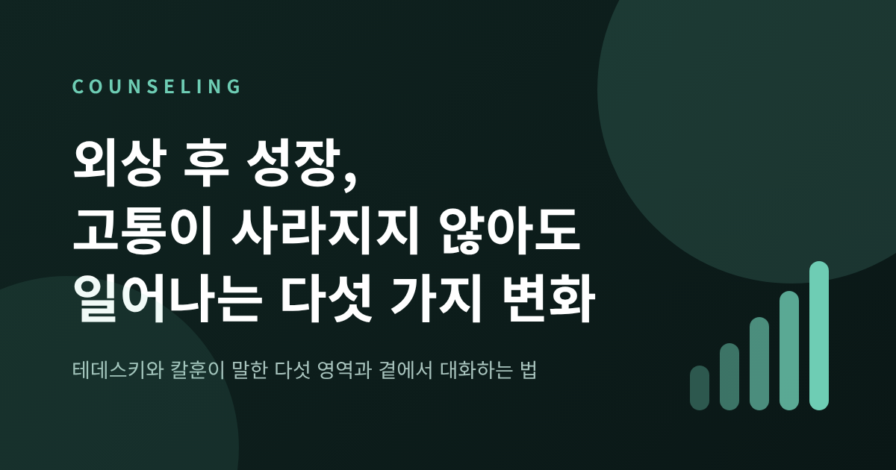
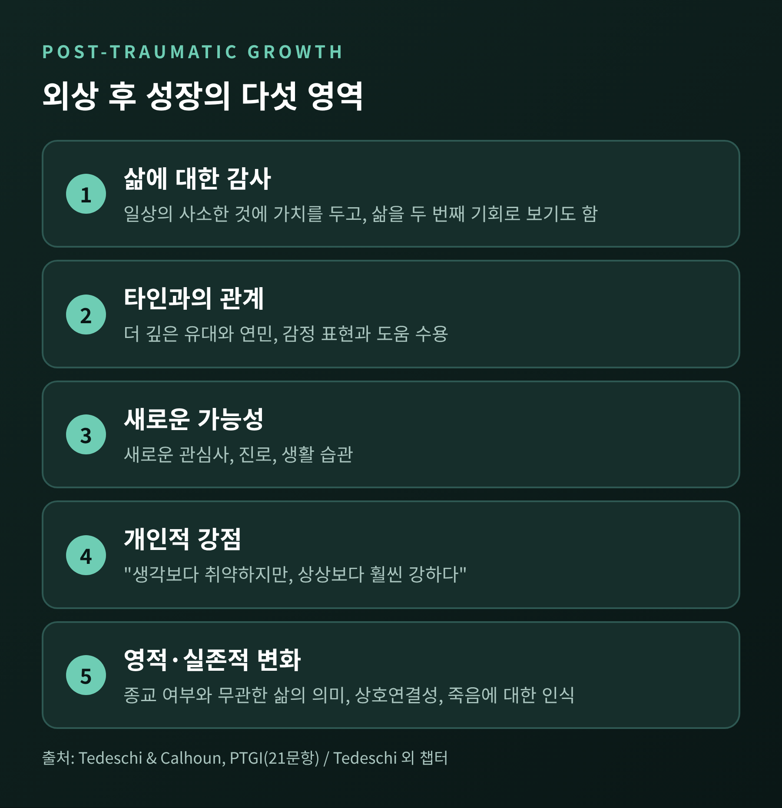
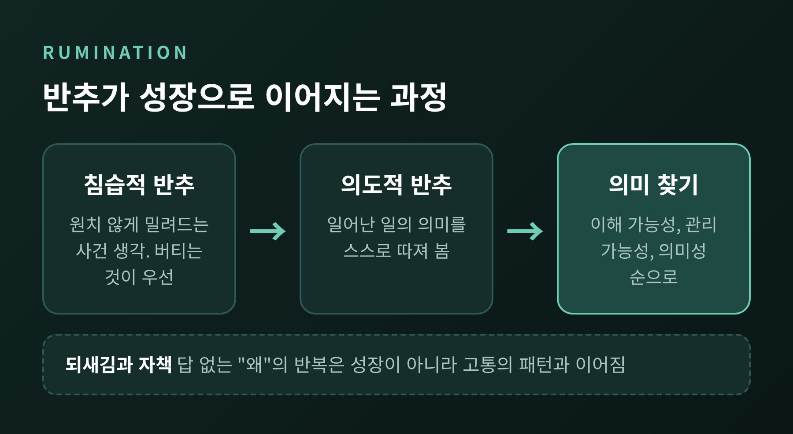
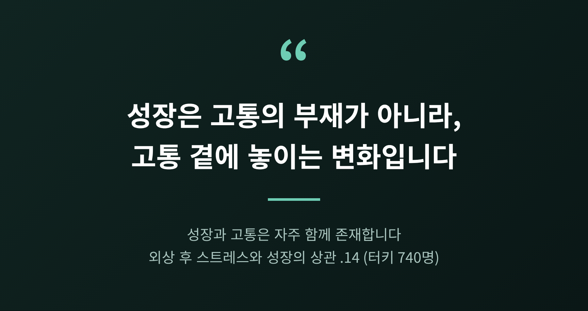
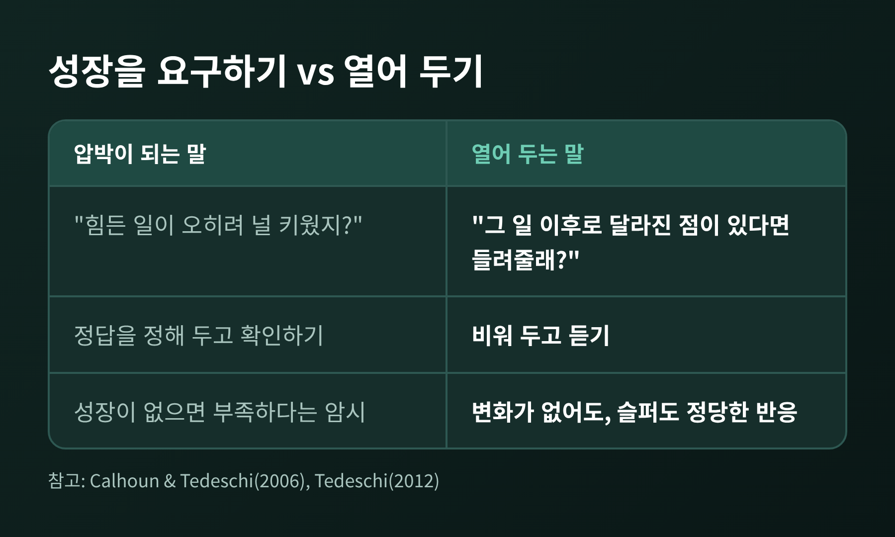
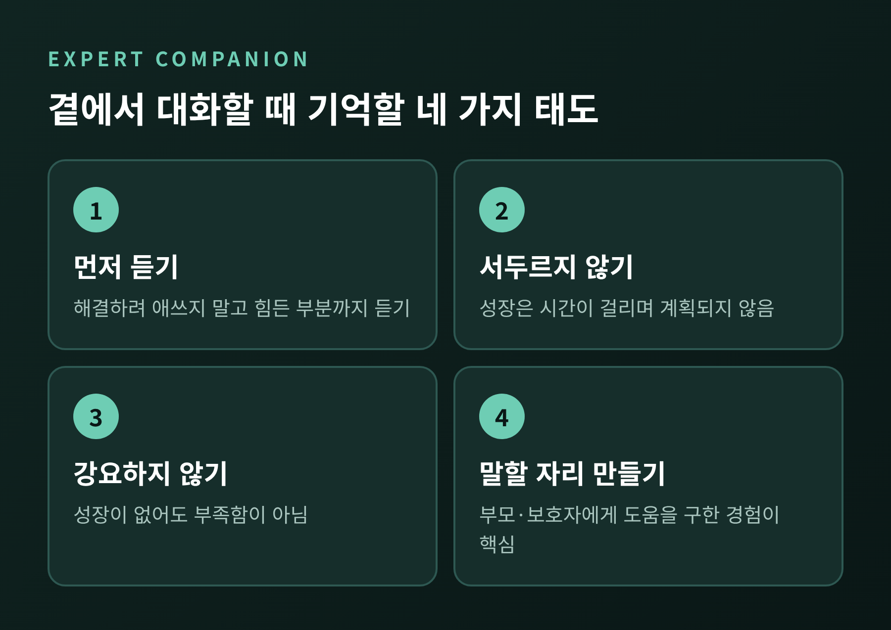

오늘은 외상 후 성장(Post-Traumatic Growth)에 대해 이야기해 보려 합니다. 심리학자 테데스키와 칼훈이 말한 다섯 영역, 성장을 만드는 반추의 역할, 그리고 가족과 청소년 곁에서 어떻게 말을 건넬 수 있는지를 정리하겠습니다.
먼저 결론부터 적습니다. 외상 후 성장은 고통이 사라진 상태가 아닙니다. 고통과 나란히 놓일 수 있는 변화이며, 누구에게나 일어나야 하는 과제도 아닙니다.
※ 이 글은 일반적인 정보 제공을 위한 글이며, 진단이나 치료 조언이 아닙니다. 글에 나오는 사례는 이해를 돕기 위해 꾸민 가상의 사례입니다.
외상 후 성장은 역경의 결과로 경험하는 긍정적인 심리 변화를 뜻합니다. 심리학자 리처드 테데스키(Richard Tedeschi)와 로런스 칼훈(Lawrence Calhoun)이 1990년대 중반에 이 용어를 만들었습니다. 두 사람은 21문항으로 이루어진 외상 후 성장 척도(PTGI)도 함께 개발했습니다.
여기서 말하는 외상은 핵심 신념을 흔들 만큼 큰 사건입니다. 연구자들은 이런 사건을 "지진 같은(seismic) 사건"이라 부릅니다. 세상이 이렇게 돌아간다고 믿던 가정이 무너질 때, 사람은 그 자리를 다시 세우려 애쓰게 됩니다. 성장은 그 재건 과정에서 나타나는 변화입니다.
회복탄력성과는 결이 다릅니다. 회복탄력성이 원래 상태로 돌아오는 힘이라면, 외상 후 성장은 이전과는 다른 곳에 도착하는 경험에 가깝습니다. 연구자들은 성장이 대체로 계획되지 않고 예상치 못하게 찾아온다고 설명합니다.
척도는 다섯 가지 영역으로 성장을 나눕니다. 1996년 학술지에 소개된 이 구성은 지금도 기본 틀로 쓰입니다.

첫째, 삶에 대한 감사입니다. 일상의 사소한 것에 가치를 두게 되고, 삶을 두 번째 기회로 보기도 합니다. 여러 연구에서 가장 자주 보고되는 영역입니다.
둘째, 타인과의 관계입니다. 더 깊은 유대와 연민, 감정을 드러내고 도움을 받아들이는 태도가 여기에 속합니다. 반대로 의미를 잃은 관계에서 물러나는 선택도 포함됩니다.
셋째, 새로운 가능성입니다. 새로운 관심사나 진로, 생활 습관이 생기는 변화입니다.
넷째, 개인적 강점입니다. 연구자들이 자주 인용하는 문장이 있습니다. "나는 생각보다 취약했지만, 상상하던 것보다 훨씬 강하다." 취약함과 강함이 함께 있다는 인식입니다.
다섯째, 영적·실존적 변화입니다. 종교가 있는 사람에게도, 없는 사람에게도 해당합니다. 원래 척도에서는 21문항 중 2문항만 이 영역이었고, 25문항으로 확장한 판에서 상호연결성과 죽음에 대한 인식까지 다루게 되었습니다.
다만 이 다섯 가지는 성장이 나타날 수 있는 영역의 목록일 뿐, 모두 채워야 하는 체크리스트가 아닙니다. 어느 영역에서 어떤 변화를 느끼는지는 사람마다 다르며, 변화가 의미 있는지는 본인이 가장 잘 압니다.
성장은 어떻게 만들어질까요. 이 이론에서 가장 중요한 개념이 반추입니다. 반추는 같은 일을 반복해서 생각하는 것을 말합니다.
사건 직후의 반추는 대개 침습적입니다. 원하지 않아도 장면과 생각이 밀려듭니다. 이 단계에서는 살아남고 버티는 것이 우선이라, 성장을 말하기엔 이른 시기입니다.
시간이 지나면 일부는 의도적 반추로 넘어갑니다. 무슨 일이 있었는지, 그것이 나에게 어떤 의미인지를 스스로 선택해 곱씹어 보는 사고입니다. 연구자들은 처리 과정을 세 단계로 설명합니다. 일어난 일을 이해하고, 감당할 수 있다고 느끼고, 마지막에 의미를 찾는 순서입니다. 의미 찾기는 기본적인 대처가 자리 잡은 뒤에 옵니다.

수치로도 이 흐름이 보입니다. 미국 224명, 일본 431명을 대상으로 한 2009년 연구에서 사건 직후의 침습적 반추는 두 나라 모두 성장과 정적으로 관련되어 있었습니다. 그리고 두 나라 모두 최근의 의도적 반추가 현재 성장 수준을 가장 강하게 예측했습니다.
청소년 연구도 있습니다. 2008년 원촨 지진 3년 반 뒤 청소년 376명(13~19세)을 조사한 연구에서, 초기 침습적 반추는 외상 후 스트레스 증상을 직접 예측했지만(β=0.37) 성장에 대한 직접 효과는 유의하지 않았습니다(β=0.07). 성장으로 가는 길은 의도적 반추를 거치는 간접 경로뿐이었습니다. 다만 이 연구는 한 시점에 측정한 자기보고라서 인과를 단정할 수는 없습니다.
한 가지 구분이 더 필요합니다. 테데스키는 성찰적 반추가 성장을 돕는 반면, 답이 나오지 않는 "왜"를 되풀이하는 되새김이나 자책은 오히려 고통의 패턴과 이어진다고 설명합니다. 오래 생각한다고 모두 성장은 아닙니다.
외상 후 성장을 가장 크게 오해하는 지점이 여기입니다. 성장은 회복의 다른 이름이 아닙니다.
연구자들은 성장과 고통이 자주 함께 존재한다고 말합니다. 재향군인 연구에서는 긍정적 평가와 부정적 평가를 모두 가진 사람의 적응이 가장 좋았다고 보고되었습니다. 중간 정도의 고통에서 성장이 가장 크다는 역U자 관계도 제시되었고, 외상 후 18~24개월이 중요한 시기로 언급됩니다. 터키 지역사회 740명을 대상으로 한 연구에서 외상 후 스트레스와 성장의 상관은 .14로 미미한 수준이었습니다. 둘은 서로 거의 독립적으로 움직인다는 뜻입니다.
한국의 연구도 비슷한 그림을 보여 줍니다. 허베이 스피리트호 기름유출 사고 후 태안 주민 228명을 사고 약 8개월부터 32개월까지 세 차례 추적한 종단연구가 있습니다. 초기에는 외상 후 스트레스와 성장이 함께 높았고, 성장은 주관적 행복감과는 오히려 부적으로 이어졌습니다. 연구진은 이를 고통을 견디기 위한 방어적 기제일 가능성으로 해석했습니다. 32개월 시점에는 스트레스와 성장의 상관이 사라지고, 성장이 행복감을 정적으로 예측했습니다. 연구진은 고통이 삶의 이야기 안에 통합된 상태로 읽었습니다.
가상의 사례를 하나 들어 보겠습니다. 가족을 갑작스럽게 잃고 2년이 지난 고등학생 A가 있다고 하겠습니다. A는 요즘 친구의 힘든 이야기를 전보다 잘 들어 줍니다. 동시에 기일이 다가오면 잠을 설치고 눈물이 납니다. 두 모습은 모순이 아닙니다. 한 사람 안에 함께 있는 것입니다.

그래서 쿠시너의 말이 오래 인용됩니다. 아들을 잃은 그는 얻은 것들을 인정하면서도 이렇게 말했다고 합니다. "아들을 돌려받을 수 있다면 이 모든 이득을 당장 내놓겠다." 성장이 있어도 상실은 상실로 남습니다.
외상 후 성장은 반가운 개념이지만, 그만큼 조심스럽게 다룰 필요가 있습니다.
비판적 연구도 적지 않습니다. 2022년 사이언스 뉴스는 성장이 상당 부분 착시일 수 있다는 논의를 소개했습니다. 2009년 프레이저 연구진은 자기보고 성장과 실제 안녕감 변화 사이에 상관이 없다고 보고했습니다. 노르웨이 군인 약 380명을 조사한 2015년 연구에서는 성장을 가장 많이 보고한 사람들이 이후 외상 후 스트레스 증상도 더 많았습니다. 호주 대장암 환자 1,966명을 5년간 추적한 연구도 성장 보고가 위협 속에서 안녕을 지키려는 대처일 수 있다고 시사합니다.
이 반론에는 테데스키의 답이 있습니다. 외상은 삶을 이전과 이후로 나누기 때문에 변화가 눈에 잘 띄고, 성장에는 시간이 걸린다는 것입니다. 그는 8주 만에 영적 신념이 바뀌기를 기대할 수는 없다고 말합니다. 양쪽 모두 일리가 있습니다. 성장의 비율을 두고도 3%에서 100%까지 보고가 갈릴 만큼, 정의와 측정과 시점에 따라 결과가 크게 달라집니다.
그래서 칼훈과 테데스키 자신도 경계합니다. 성장이 대중화되면 성장하지 못한 사람이 자신을 실패로 느낄 수 있다는 우려를 공유합니다. 변화가 의미 있는지는 점수의 기준선이 아니라 당사자가 가장 잘 판단한다고 봅니다. 모두가 정해진 방식으로 회복해야 한다는 가정도 경계 대상입니다.

실제로는 이런 차이가 생깁니다.
같은 관심에서 나온 말이라도, 앞의 문장은 정답을 정해 두고 뒤의 문장은 비워 둡니다.
테데스키는 상담자의 태도를 전문가 동반자(expert companion)라는 말로 설명합니다. 가장 힘든 부분까지 듣고, 감정의 강도를 견디고, 오래 곁에 머무는 사람입니다. 생존자가 자기 경험의 전문가이므로 전문성은 낮추라고 말합니다. 핵심 문장은 "해결하려 애쓰지 말고 듣는 데 집중하라"입니다. 성장의 가능성은 기대하고 귀 기울이되, 만들어 내려 하지 않습니다.
가족에게 옮겨 오면 몇 가지 태도가 남습니다. 이는 연구에 근거한 일반적인 태도이며, 개별 상황에 대한 처방은 아닙니다.

연구 근거도 있습니다. 부모를 잃은 아동·청소년·청년 50명을 6년간 추적한 연구에서 성장을 가장 잘 예측한 것은 대인관계 대처였습니다. 특히 부모나 보호자에게 도움을 구한 경험이 핵심이었고, 또래나 형제의 지지는 유의한 관련이 없었습니다. 연구진은 청소년이 변화를 말할 수 있는 환경을 만들 것을 제안합니다.
소아암을 겪은 아이와 부모를 다룬 이론 고찰도 같은 방향입니다. 아이의 적응과 성장에는 의학적 지표보다 부모의 따뜻함 같은 양육 요인이 더 크게 작용했고, 부모의 고통이 부모의 성장보다 아이의 적응에 더 강하게 영향을 주었습니다. 부모가 자신의 마음을 돌보는 일도 아이 곁에 머무는 일의 일부입니다. 다만 이 영역은 추가 연구가 필요하다고 연구자들이 밝히고 있습니다.
그렇다면 청소년과는 어떻게 이야기하면 좋을까요. 세 가지를 권합니다. 첫째, 먼저 고통을 충분히 듣습니다. 둘째, 변화가 보이더라도 "성장했구나"라고 이름 붙이기보다 아이가 스스로 말할 때까지 기다립니다. 셋째, 아이가 변화를 말하지 않아도 그것을 부족함으로 읽지 않습니다. 침묵과 슬픔도 정당한 반응입니다.
※ 불면, 일상 기능의 저하, 자해나 극단적인 생각이 보인다면 혼자 감당하지 말고 정신건강의학과, 심리상담센터 등 전문기관의 도움을 받으시길 권합니다. 위기 상황에서는 지역의 위기상담 전화나 응급 서비스를 바로 이용하시길 바랍니다.
정리하면 이렇습니다.
외상 후 성장은 다섯 영역에서 나타나는 변화이고, 침습적 반추가 의도적 반추로 옮겨 가는 과정에서 만들어질 수 있습니다. 그러나 고통과 함께 존재하며, 일어나지 않아도 실패가 아닙니다. 중요한 것은 성장을 목표로 삼는 일이 아니라, 고통 곁에 오래 머무는 일입니다.
곁에 있는 누군가가 아직 성장을 말하지 못한다면, 그 사람에게 필요한 것은 기다리는 시간일지도 모릅니다. 당신이 건네는 한 문장은 정답이어야 할까요, 아니면 열어 두는 질문이어야 할까요.
※ 참고: Tedeschi & Calhoun(1996), Tedeschi 외(2018 저서 및 챕터), Calhoun & Tedeschi(2006), Taku 외(2009), Wu 외(2015), Wolchik 외(2008), Koutná & Blatný(2020), 김수현·전우영(2026), Science News(2022), Occhipinti 외(2015) 등. 일부 자료는 요약본으로 확인한 2차 자료입니다.